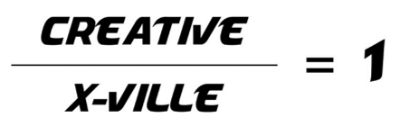
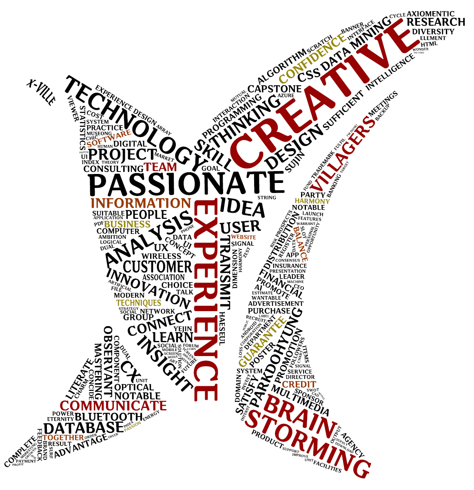
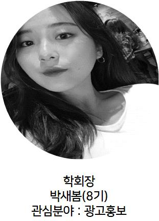
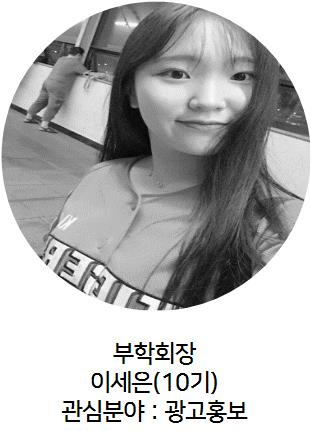
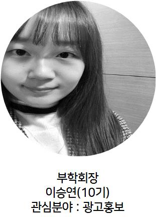

X-Ville은 사용자 인사이트 (User Insight)를 중심에 두고,
사용자를 이해하자는 목적으로 2015년 결성된
국민대학교 경영대학의 학회이자 연구실이다.
X-Ville은 X-ville/creative=1을 슬로건으로 삼아,
다양한 ideation 방법들을 통해 creative한 idea를
도출할 수 있도록 자체적인 프로젝트들을 수행하고 있다.
X-Ville 소개


X-Ville 지도교수님
Professor Park Do Hyung
KAIST 산업경영학 & 건설 및 환경공학과 복수전공
KAIST 경영대학 경영공학 석사
KAIST 경영대학 경영공학 박사
KAIST 경영대학 경영공학 석사
KAIST 경영대학 경영공학 박사
LG전자 LSR 연구소 책임연구원(차장)
KISTI(한국과학기술정보연구원) 선임연구원
국민대학교 경영대학 경영정보학부 조교수
KISTI(한국과학기술정보연구원) 선임연구원
국민대학교 경영대학 경영정보학부 조교수
User/Customer Behavior
User/Customer Analytics
Experience Design
User/Customer Analytics
Experience Design
“ More Information “
http://cxlab.co.kr/?page_id=157
http://cxlab.co.kr/?page_id=157
X-Ville 임원진



X-Ville History
-
- 국민대학교 경영대학 UX/UI 연구학회 'X-Ville' 창단 (2015.03)
- 스트레스 지수 분석 프로젝트 (2015.09)
- LG UX&UI 공모전 작품 출품 (2015.10)
- 캡스톤 디자인 경진대회 인기상 수상 (2015.11)
- 2015 하반기 성과발표회 (2015.12)
- X-Ville Website 개설 (2015.12)
-
- 행복 지수 분석 프로젝트 (2016.03)
- 박물관 프로모션 프로젝트 (2016.05)
- X-Ville Facebook 페이지 개설 (2016.06)
- 2016 상반기 성과발표회 (2016.06)
- '게임화 기반 디자인 사고 방법론의 개발과 실제' 논문 게재, 한국IT서비스학회지(JTIS) (2016.06)
- 안드로이드 어플리케이션 '하루글감' 개발 (2016.08)
- 수면 데이터 분석 프로젝트 (2016.08)
- 한국지능정보시스템 추계학술대회 우수논문상 수상 (2016.09)
- 여행자 물가지수 분석 프로젝트 (2016.10)
- 경마 순위 분석 프로젝트 (2016.12)
- 경영정보학부 학술제 대상 수상 (2016.12)
- 2016 하반기 성과발표회 (2016.12)
[국민대학교 경영대학 학회평가 S등급]
-
- EmTeD 창업공모전 작품 출품 (2017.01)
- EmTeD 우수동아리 선정 (2017.02)
- 제 9회 파나소닉 PR 챌린지 공모전 FINAL 장려상 수상 (2017.06)
- 제 9회 파나소닉 PR 챌린지 공모전 인쇄광고부문 우수상 수상 (2017.06)
- '모바일 어플리케이션 UX/UI 디자인 입문서' 도서 출간 (2017.06)
- 2017 상반기 성과발표회 (2017.06)
- 외부 침입자 감지 시스템 개발 (2017.08)
- 월드프렌즈 ICT 봉사단 인도네시아, 베트남, 캄보디아 파견 (2018.08)
- 국민대 X 동국대 경영정보학부 연합학술대회 우수상 수상 (2017.09)
- EmTeD 우수동아리 선정 (2017.10)
- 캡스톤 디자인 경진대회 작품 출품 (2017.12)
- 한국산학기술학회 대학생 프로젝트 경진대회 입상 (2017.12)
[국민대학교 경영대학 학회평가 S등급]
-
- 2017 하반기 성과발표회 (2018.01)
- EmTeD 창업공모전 우수상 수상 (2018.02)
- 국민대학교 알파프로젝트 선정 (2018.02)
- 국민대학교 4차 산업혁명 페스티벌 부스 운영 (2018.05)
- 화장품 온라인 점원 챗봇 개발 (2018.06)
- EmTeD GX TRIP 상하이 파견 (2018.07)
- 월드프렌즈 ICT 봉사단 인도네시아, 방글라데시 파견 (2018.08)
- 2018 상반기 성과발표회 (2018.09)
- 제 2회 KMU Rocket Pitch 대회 대상 수상 (2018.09)
- 경영정보학부 학술제 우수상, 장려상 수상 (2018.11)
- '소비자 감성 분석 기반의 음악 추천 알고리즘 개발' 논문 게재, 지능정보연구학회지(JIIS) (2018.12)
[국민대학교 경영대학 학회평가 S등급]
-
- 제 16회 KPR 대학생 PR 아이디어 공모전 입상 (2019.02)
- 2018 하반기 성과발표회 (2019.03)
- 한국인 행복 지수 데이터 분석 프로젝트 (2019.06)
- 안드로이드 어플리케이션 '미세먼지 알리미' 개발 (2019.06)
- 중소기업 R&D 데이터 분석 프로젝트 (2019.06)
- 연계/융합전공 교육과정 설계 공모전 장려상 수상 (2019.06)
- 2019 상반기 성과발표회 (2019.06)
- 'UX설계를 위한 사회과학의 가르침' 도서 출간 (2019.08)
- '사용자 니즈 기반의 챗봇 개발 프로세스: 디자인 사고방법론을 중심으로' 논문 게재, 지능정보연구학회지(JIIS) (2019.09)
[국민대학교 경영대학 학회평가 S등급]
-
- 국민대학교 알파프로젝트 선정 (2020.02)